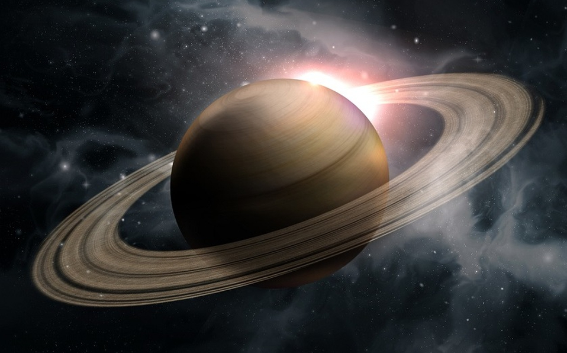

Saturno es el único planeta con un sistema de anillos que podemos ver desde la Tierra y, probablemente, el que cuenta con más satélites. Es también un planeta gigante gaseoso, y es el segundo mayor en tamaño de nuestro sistema. Definitivamente tiene los más bellos anillos que vemos están compuestos por grupos de pequeños aros que rodean a Saturno. Están hechos de pedazos de hielo y roca. Como Júpiter, Saturno es una pelota de hidrógeno y helio, en gran parte.

Cuando Galileo Galilei vio a Saturno a través de un telescopio en el siglo XVII, no estaba seguro de lo que estaba viendo. Al principio, creyó que estaba mirando tres planetas, o un planeta con asas. Ahora, sabemos que esas "asas" eran los anillos de Saturno.
Estructura y superficie
Es un gigante de gas, como Júpiter. Está compuesto por hidrógeno y helio, sobre todo.
Tiene una atmósfera densa.
Cuenta con un precioso grupo de siete anillos separados por espacio entre ellos.
El tiempo en Saturno
Un día solo dura 10,7 horas.
Su año equivale a 29 años en la Tierra.
Sus vecinos
¡Tiene más de 50 lunas! Falta confirmar la existencia de varias lunas más.
Es el sexto planeta contando desde el Sol. Sus planetas vecinos son Júpiter y Urano.
Tiene un núcleo rocoso rodeado por hidrógeno, con un poco de helio y metano. Irradia más calor del que recibe del Sol, lo mismo que ocurre con los gigantes Júpiter y Neptuno. El color amarillento de las nubes tiene bandas de otros colores, como Júpiter, pero no tan marcadas. Cerca del ecuador de Saturno el viento sopla a más de 450 Km/h.
La siguiente tabla muestra datos de Saturno comparado con la Tierra:
Datos básicos Saturno La Tierra
Tamaño: radio ecuatorial 58.232 km. 6.378 km.
Distancia media al Sol 1.426.725.400 km. 149.600.000 km.
Día: periodo de rotación sobre el eje 10,23 horas 23,93 horas
Año: órbita alrededor del Sol 29,46 años 1 año
Temperatura media superficial -139 º C 15 º C
Gravedad superficial en el ecuador 9,1 m/s2 9,78 m/s2
Es el único planeta del Sistema Solar que tiene una densidad menor que el agua. Si encontrásemos un océano suficientemente grande, Saturno flotaría.
Los anillos de Saturno
Galileo observó por primera vez los anillos en 1610, pero los confundió con satélites ya que su telescopio era todavía rudimentario. En 1659 Christiaan Huygens, con un telescopio mejorado, los vió claramente y sin dudas. Tuvieron que pasar dos siglos hasta que, en 1859, James Clerk Maxwell demostró matemáticamente que los anillos de Saturno estaban formados por partículas. Hasta entonces se creía que eran sólidos.